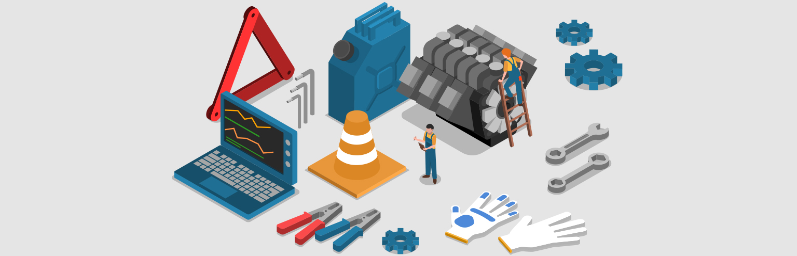

CHECK UP HİZMETLERİ
Sürüş güvenliği için araçların düzenli kontrol edilmesi gerekir. Berat Otomotiv Check-Up esnasında aşağıdaki kontroller yapılmaktadır.
Motor Kontrolleri
- Motor yağı seviyesi
- Motor soğutma sıvısı seviyesi ve yoğunluğu
- Fren hidroliği seviyesi ve kalitesi
- Hidrolik direksiyon yağ seviyesi
- Antifriz yoğunluğu
- Yardımcı kayış, gergi ve avare kasnak kontrolü
- Hava ve polen filtresi kontrolü
- Sızdırmazlık (su ve yağ kaçağı)
- Egzoz Kontrolü
- Susturucu
- Katalitik konvertör
- DPF
Elektrik Fonksiyonları Kontrolleri
- Uyarı ve arıza kodu okuma
- Araç bilgi ekranı kontrolleri
- Far - Park - Stop - Sinyal - Plaka - Sis - Araç içi aydınlatma ampulleri kontrolleri
- Klima sistemi kontrolleri ve performans testi
- Akü Kontrolleri (kutup başları, kablolar, yüzey voltajı, marş gücü)
- Cam yıkama ve silecekler
Güç Aktarma Grubu Kontrolleri
- Ön ve arka fren disk ve balatalar
- Fren hortumları ve bağlantıları
- El freni ayarı
- Süspansiyon kontrolü
- Ön ve arka amortisörler
- Aks ve aks körükleri
- Rot başı - rot kolu - rotil kontrolü
- Direksiyon ve salıncak bağlantısı - burçlar ve takozlar
Lastik ve Jant Kontrolleri
- Lastik hava ve diş derinliği kontrolü ve ayarı
- Düzensiz aşınma tespiti
- Lastik ve jant hasar durumu
- Lastik subap ve subap kapakları kontrolü
- Tekerlek bijon kontrolü
Diğer Kontroller
- Yangın söndürücü
- İlk yardım çantası
- Uyarı levhaları - Kriko - Bijon- Çekme Halatı – Stepne
- Araç muayene
- Kasko
- Sigorta
- Kaporta (taş izi, çizik, göçük)
- Silecek su seviyesi
